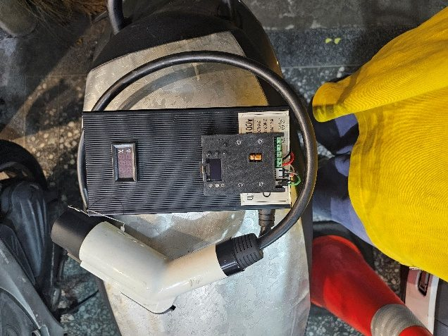
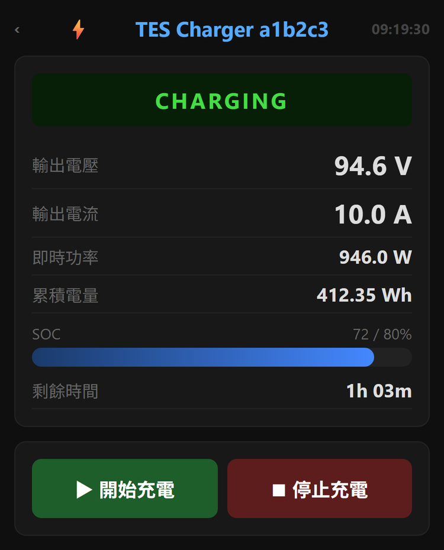
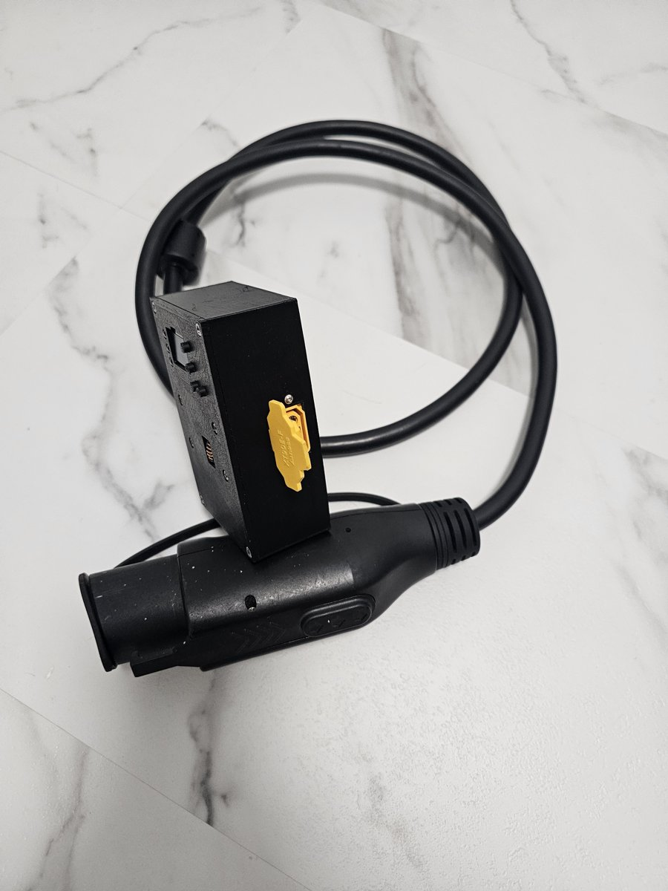

iE125 原廠充電器改裝
eMoving iE125 的原廠充電器（隨車充）嫌充太慢、電源板燒掉不能充，或想在家裡充快一點？不用買新的充電器，把手上的原廠充電器改裝就好。
充電器壞掉了、不確定還能不能改？先看原廠充電器壞掉怎麼辦。
原廠充電器由三個部分組成：主電源、控制板、充電槍。我的做法是只保留充電槍，主電源和控制板全部換成我自己的——控制板用的就是 TES 快充控制板。
- 改裝後出廠設定 1 kW / 10 A（原廠 360～600 W）；電流可以在設定裡自行調高，原廠充電槍理論上可承受約 15 A，但超過 10 A 有風險，見下方可以再高嗎？
- 原廠 360 W 與 600 W 兩款充電器都能改
- 插一般 110V 插座時，1 kW 輸出離插座的容量上限（1650 W）還有餘裕
- 最容易過熱燒掉的電源板會被整個換掉，所以電源板已經燒掉的原廠充電器，只要充電槍完好，一樣可以改
- 可以連 WiFi，手機開網頁就能看即時電壓、電流、目前電量
- 可以設定「充到幾 % 就停」（例如只充到 80% 顧電池）；排程、推播、充電紀錄、OTA 更新也都有
- 這些功能要先連上 WiFi、在手機上設定才用得到；用不用、用多少，看個人需求
- 車輛本身完全不動


為什麼連控制板都換掉？
原廠控制板只負責基本充電：看不到充電狀態、不能設定充到幾 % 就停，輸出上限固定在原廠板上，而且是專車專用。換成自研的 TES 快充控制板之後：
- 手機可以看即時電壓、電流、電量，可以設定充電上限、排程和推播
- 韌體可以透過 OTA 更新，之後的新功能，改裝過的充電器也拿得到
- 輸出電流不再被原廠板寫死，可以自己在設定裡調整：沿用原廠充電槍可以自行調高（風險見下方可以再高嗎？），換上規格更高的充電槍還能再往上（研究中那組 1.5 kW 就是這樣做出來的）
- 不再專車專用：控制板走的是 TES 通用規格，理論上只要是 TES 規格的車、而且充電器的電源電壓高於車的電池電壓，都可以使用（iE125 以外的車款尚未實測，見常見問題）
為什麼出廠是 1 kW / 10 A？可以再高嗎？
出廠一律設定 10 A，因為保留下來的原廠充電槍，線材上標示的額定就是 10 A。
電流可以自己調高（高階款在設定裡調，基礎款調電源旋鈕）。原廠槍的線芯是 2 mm²，理論上承受到 15 A（約 1.5 kW）沒問題，但超過 10 A 就已經超過線材的標示額定，風險要先講清楚（超過 15 A 則不建議）：
- 發熱最集中的地方是槍頭端子的壓接處。15 A 的發熱大約是 10 A 的 2.25 倍，長期反覆受熱，接觸點可能慢慢劣化、越用越熱。
- 插 110V 插座時，15 A 的輸出加上轉換損耗，會用到插座容量上限（1650 W）附近，而且一次充電要連續好幾個小時。老舊的插座、延長線與室內線路長時間接近滿載，有過熱起火的風險。可以的話請改插 220V（主電源有 110V／220V 切換）。
- 主電源也會接近滿載運轉，比較容易壞。
- 調到 10 A 以上是你自己的選擇，風險由你自行承擔；因此造成的充電槍、插座、室內線路損壞不在保固範圍。
如果決定要開，請定期摸摸看槍頭和插頭：明顯燙手、有焦味或變色，就立刻調回 10 A，也不要再用那個插座或那支充電槍。
價格與兩種做法
兩種做法都沿用你原廠充電器的充電槍，出廠設定都是 1 kW / 10 A（電流可以自行調高，但原廠槍超過 10 A 風險自負，見上面的說明），控制板的功能也完全一樣；差別只在控制盒怎麼接到電源。
| 原廠充電器改裝 | XT90 版 | |
|---|---|---|
| 做法 | 控制盒鎖在主電源上，需要在電源外殼鑽孔 | 充電槍和控制板做在同一個控制盒，用 XT90 接頭接到電源 |
| 控制盒 | NT$3,200 | NT$3,300 |
| 施工費 | 鑽孔 NT$300 | 免（鎖上螺絲、接上接頭就能用） |
| 主電源 | 1.5 kW 版本，依當時匯率以實價計算，請私訊洽詢報價 | |
| 以後換電源 | 可以自己換：拆開電源外殼、換上新的電源板，再把端子接線鎖回去（不用重新鑽孔） | 換一顆有 XT90 輸出的電源，插上就能用 |
| 自備電源 | 可以，但必須是我指定的那款電源（請先私訊確認型號） | 可以，規格符合就能接 |
| 合計 | 控制盒 NT$3,200 ＋ 鑽孔費 NT$300 ＋ 主電源 | 控制盒 NT$3,300 ＋ 主電源 |
想省一點：原廠充電器改裝的控制盒也可以選基礎款（NT$2,000／OLED 版 NT$2,400），一顆按鍵就能充，但沒有手機監控、App 和無線更新。基礎款的電流由電源上的旋鈕決定：出廠把電源調在 10 A，控制盒上限 15 A，要調高同樣風險自負（見上面的說明）。XT90 版目前只有高階款。

- 主電源一律使用 1.5 kW 的版本，附 110V／220V 切換開關。出廠設定最多輸出 1 kW，只用到電源約 2/3 的能力，電源比較不容易壞；自行調高到 15 A 左右時，電源會接近滿載運轉。
- XT90 版控制盒比較貴一點，但不用鑽孔、不收施工費，合計反而比較便宜；控制盒也不用鎖在電源上，以後換電源只要插上 XT90，不用拆殼、鎖端子。缺點是控制盒和電源是分開的兩件，中間用 XT90 線連接，收納沒有一整台方便。
改裝服務與 XT90 版控制盒都是用你的原廠充電槍製作的客製品，不適用七天鑑賞期。
以上價格自 2026 年 10 月起實施。隨著施工流程固定，組裝與施工費已調降，XT90 版不再收取組裝費。價格如有調整，以洽詢當下為準。
保固
- 控制盒：交付後 3 個月內，非人為損壞免費維修或更換；進水、受潮、摔落、自行拆改不在保固範圍。過了保固期，有問題一樣可以找我，畢竟是我設計的，我會盡力協助。
- 主電源：交付後 7 天內新品不良換新，條件同控制盒（兩種做法都一樣）；自備的電源不在保固範圍。電源會依做法加裝控制盒或 XT90 接頭，大陸原廠因此不再保固。
- 自行把電流調到 10 A 以上：超過原廠充電槍線材的標示額定，風險自行承擔；因此造成的充電槍、插座、室內線路損壞不在保固範圍。
有些話要先講清楚
- 家用 110V 插座的容量上限是 1650 W。老舊的電線與插座長時間接近滿載有風險，這也是我設定充電器功率上限時的考量。
- 控制板與改裝皆未經 BSMI、UL 等安規認證，性質是個人研發的技術方案，不是通過認證的量產商品。
- 任何第三方補能設備都可能影響原廠保固，請自行評估。